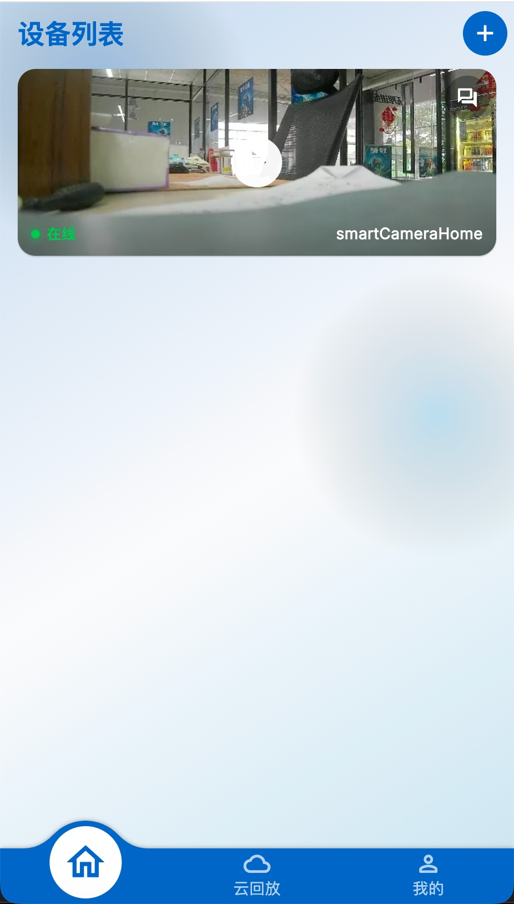
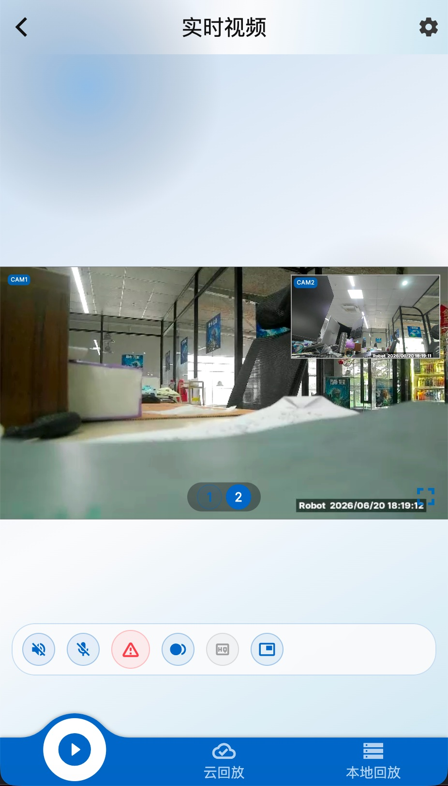
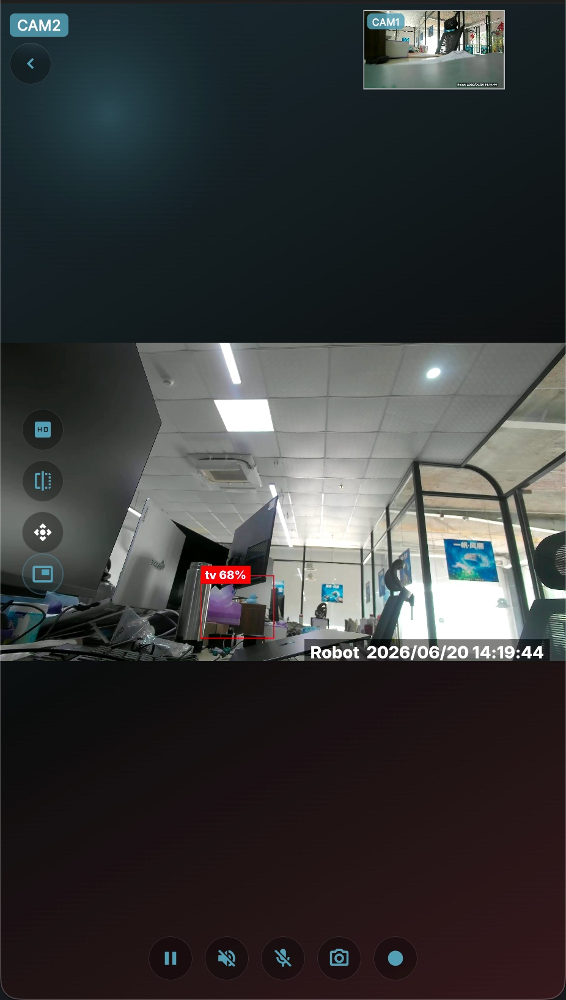
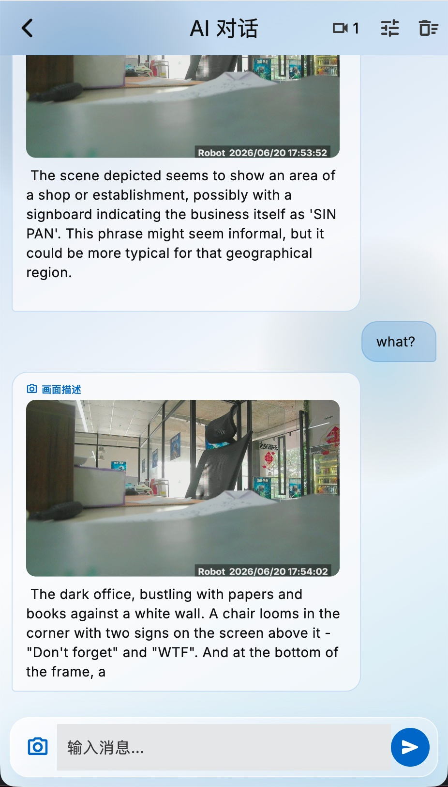
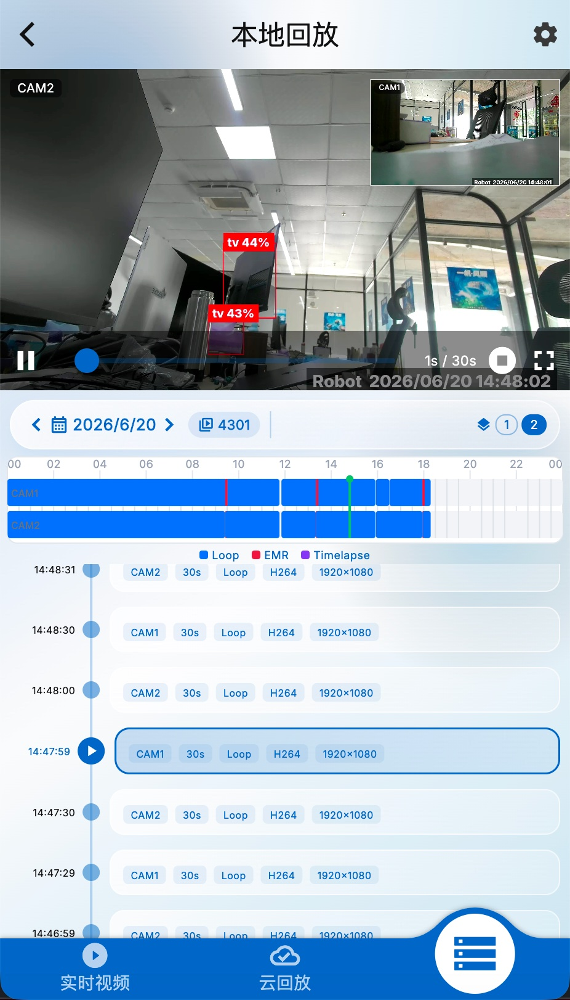
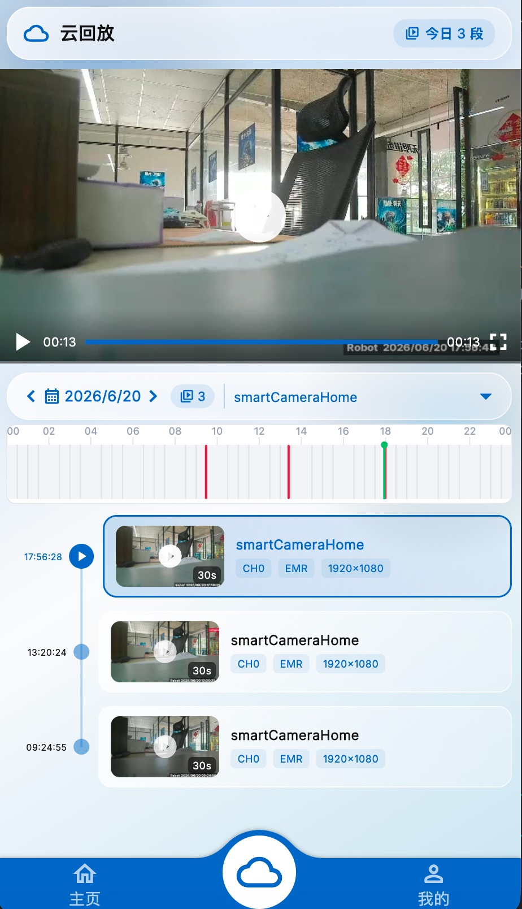
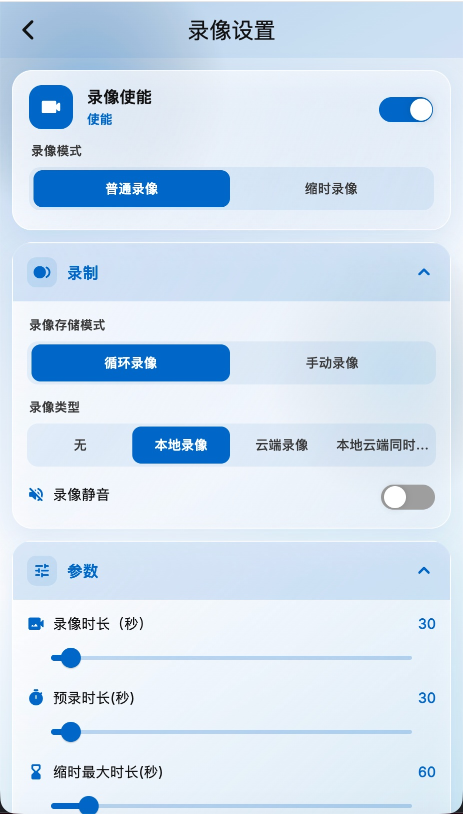
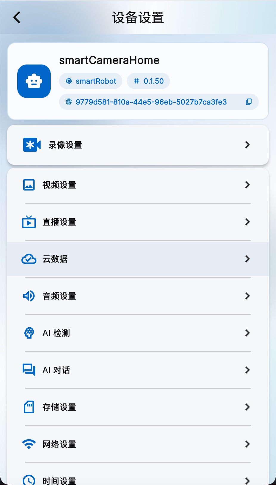
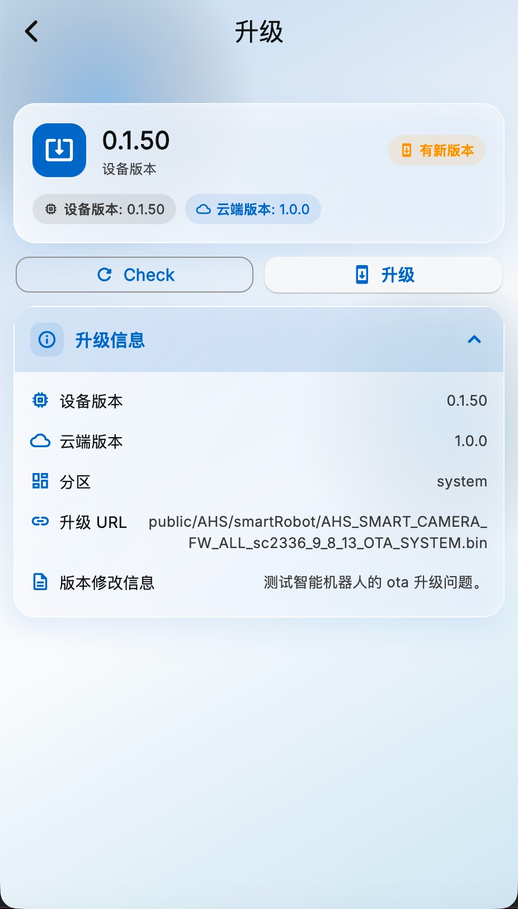
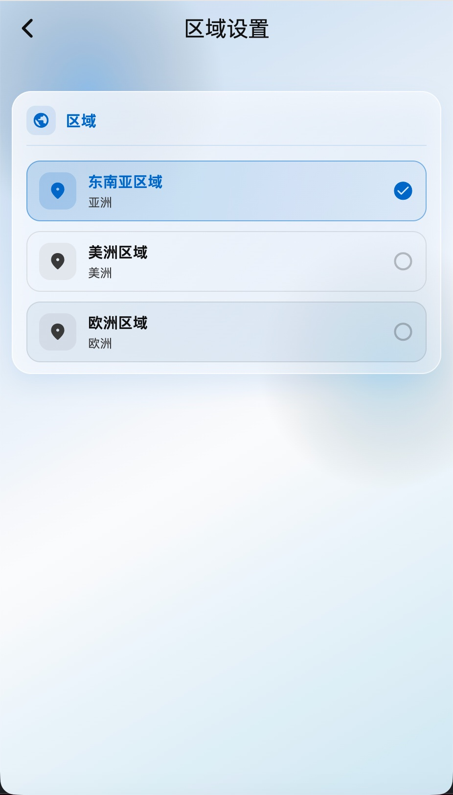

单设备多路同屏实时直播(当前演示 2 路),WebRTC 远程低延迟,随时随地看,无需端口映射。
YOLO 多类目标检测,检测框直接画在实时画面(OSD),支持 Foxglove / ROS 推送,全程本地算力。
拿实时画面直接问它:看懂场景、读出画面文字(OCR)、自然语言问答,本地 + OpenAI 双模式,断网可用。
本地/云端回放,多路同屏同步复盘共用一条时间轴;单日数千段、三模式分色不丢录像。
循环 / 缩时 / 预录 / 手动 + 事件录像;本地 / 云端 / 双存;累计 14.7 万文件无损。
OTA 在线升级、全球三区域(东京/美洲/巴黎)就近接入;整套 App 可白标(品牌/主题/语言)。

App 首页,集中管理你绑定的所有设备,在线状态一目了然。

单设备多路摄像头同屏直播(当前演示 2 路),不是切换、是真并发。

实时画面上自动画出检测框 + 标签——全部由设备端本地算力实时推理,拔网也能跑。

拿一帧实时画面直接问它——设备里跑着视觉大模型,看懂整个场景,不只是数物体。

回设备本地存储复盘:多路同屏同步回放,共用一条时间轴,录像极密不丢。

云端存的是 1080P 事件录像,可按日期、设备检索,云端录像不怕丢。

录像策略按场景灵活配置,工业现场要的「连续录不丢」在这里坐实。

设备的统一控制入口:从这里进入录像、AI、网络、存储、升级等全部配置。

出货后远程统一升级,不用召回——量产客户的运维刚需。

全球可部署:就近接入、低延迟、数据合规——海外客户的强信号。